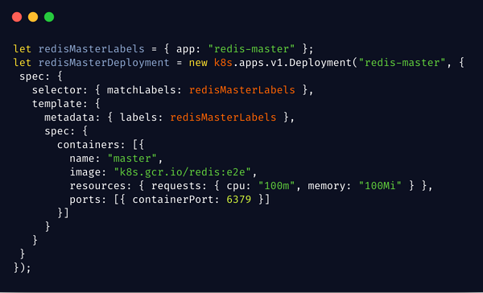
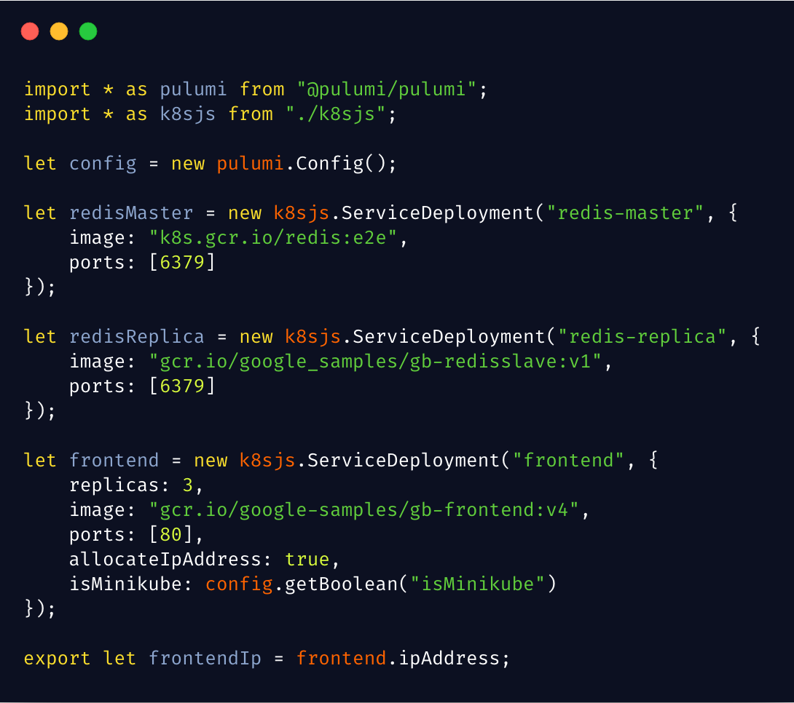
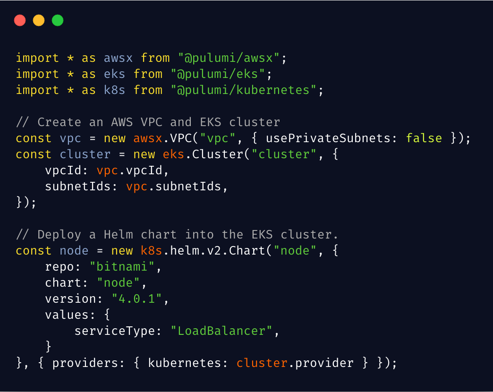

If you liked ksonnet, you'll love Pulumi!

The Kubernetes landscape is constantly evolving as end users and developers search for the right tools, approaches, and abstractions to help them manage Cloud Native infrastructure in production. Last Friday, we were honored to have Joe Beda show where Pulumi fits in on his TGIKlivestream, highlighting how to use your favorite language and consistent workflows to create, deploy, and manage cloud resources across multiple clouds and Kubernetes.
Last week Heptio (now part of VMWare) announced that work on ksonnet, a project launched by Heptio, Box, Microsoft, and Bitnami, will stop. We’re sad to see ksonnet winding down, but are thankful for the collaborative exchange of ideas between projects, and are excited to see continued investment in VMWare/Heptio’s other projects. The good news is that, if you liked ksonnet, we’re confident that you’ll love Pulumi. In this post, we’ll tell you why.

Recap of ksonnet’s Approach
In the original ksonnet launch post, Joe Beda describes the “wall of YAML” that we face when creating and configuring Kubernetes systems. This intimidates new users, making for a steep learning curve, while also leading to thankless boilerplate and copy-and-paste for the most experienced users. Systems like Helm have attempted to solve the problem by adding templates to YAML.
ksonnet, instead, introduced a new DSL – based on work from Google on the Jsonnet language (itself influenced by experience internally on Borg) – with more “language like” functionality, that could generate configuration. The result was a feature set that included:
- Local variables
- Functions and lambdas
- Modules and imports
- Mixins
- Configuration concatenation and merging
- Template parameterization
The idea is that you can author richer configuration in ksonnet, and from that, simply generate and apply stock Kubernetes configuration, without Kubernetes needing to know about ksonnet.
Recap of Pulumi’s Approach
Pulumi was inspired by many of the same challenges as ksonnet, but from a slightly broader perspective. As we surveyed the landscape of configuration languages, we found a bewildering array of them: plenty of stock YAML, but also JSON and YAML with “built-in” templating mechanisms (AWS CloudFormation and Azure Resource Manager Templates), templating systems bolted on top of JSON and YAML (Helm Charts), and new DSLs (Terraform), to name just a few. To add to the complexity, many engineers have to stitch multiple of them together or regularly switch between different dialects in an increasing multi-cloud environment.
Instead of creating another DSL, we wondered: Why not use languages we’re already familiar with? Is there some inherent reason that’s incompatible with configuration languages? The answer was no, it seemed to us. While Infrastructure-as-Code is based on the idea of a declarative goal state, we realized that it’s possible to use imperative languages to create that state.
By using languages like JavaScript, TypeScript, Python, and Go, we would immediately see many benefits:
- All of the powerful language capabilities they already have (including the ksonnet list)
- Instant access to entire package ecosystems (NPM, PyPI, etc)
- Great IDE support, including integrated API documentation, syntax highlighting, statement completion, inline errors, and refactoring
- Ability to test, lint, and statically analyze code using existing tools
But we didn’t want to just generate configuration files. There are systems out there that generate a configuration from languages like Python. In our experience, the underlying configuration system and its limitations always leaks through, quickly ruining the ease-of-use benefits. So, we built an engine that has a full cloud object model across providers, can diff resources, applies updates using robust Infrastructure-as-Code techniques, and provides rich status reporting.
A short tour of Pulumi for ksonnet users
Just like in ksonnet, Pulumi provides access to the complete raw Kubernetes API, so you can do everything that Kubernetes supports - but using programming languages that provide completion lists, error checking, inline documentation, and basic features like variables and control flow. Here’s an example of part of a direct port of the Guestbook example to Pulumi:

Also like in ksonnet, in Pulumi we can introduce additional features like modules/imports, components, functions, and more to structure our code and increase the level of abstraction that we work at as we author our Kubernetes configuration. This example shows the Guestbook app re-written using higher-level components in Pulumi, and you can see similar approaches to those used in the similar example with ksonnet… and just using TypeScript instead of bespoke DSL:

Unlike with ksonnet though, Pulumi programs are deployed using the
pulumi CLI, which provides rich feedback on the progress a deployment
is making toward being complete (as well as feedback when things go
wrong!).

And finally, a major area where Pulumi goes beyond ksonnet in scope, it works with public and private cloud resources as well as Kubernetes, enabling deployment of Kubernetes resources and AWS/Azure/GCP resources using a single deployment workflow. For example, you can stand up a managed Kubernetes cluster and deploying a Helm chart to it.
[
Another fun example is provisioning and consuming an Azure CosmosDB from within your Kubernetes app.
Learn More
If you’d like to learn about Pulumi and how to manage your infrastructure and Kubernetes through code, click here to get started today. Pulumi is open source and free to use.
If you’d like to go deeper on certain topics, here are some additional resources to check out:
- Overview of Pulumi Kubernetes Scenarios
- Tutorial: Create a Kubernetes cluster on a cloud provider Amazon EKS, Google GKE, or Azure AKS
- Tutorial: Operate and deploy to a Kubernetes cluster
- Docs: Pulumi docs, including an overview of the programming model
- Video: Watch Joe Beda take Pulumi for a spin in last week’s TGIK
As always, you can check out our code on GitHub, follow us on Twitter, subscribe to our YouTube channel, or join our Community Slack channel if you have any questions, need support, or just want to say hello.
If you’d like to chat with our team, or get hands-on assistance with migrating your existing configuration code (including ksonnet programs) to Pulumi, please don’t hesitate to drop us a line.
Posted on